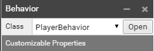

SUPERPOWERS TUTORIAL #2 SUPER OXO
Chapter 3 : Writing the Player actions, Game logic part 1
Our game have a structure and we know the features we want to add.
First we will code the behavior of the mouse with the squares on the game board, however we need before that to create a constant that will hold the Squares.
We have created two Scripts, Global and Player.
- Global will contain all our main functions and global variables.
- Player will contain all functions which is relative to the mouse behavior and the player turn.
Setting the global script
We have already built the board and placed the squares, we need now a way to access to each of this squares through the program. For this we will build a SQUARES constant Array which will be a container for our board datas and an important indicator about the state of all the squares of the board.
Note : an Array is a list of data in JavaScript.
We initialize the constant SQUARES by writing in the beginning of our Global script :
// Initialize globally the SQUARES Array
const SQUARES = new Array;
For now, SQUARES is only an empty Array, we need to fill it with the nine squares to be able to access it at any time.
We have before separated each square as individuals Actors. Instead of adding them one by one in the Array, we will use a loop that will push 9 times the 9 differents squares inside our SQUARES array and we will do so in a way that the index number in the array is in the same order that the name of each square (and it is why we started with Square0), then when we want to access to the first square of the board (up left corner) we use the square index that is in his name, in our example SQUARES[0] for Square0.
In fact, we are going to push arrays inside the main Array SQUARES, like 9 times little list of two datas that we will access by using their index numbers between brackets.
Each of the nine arrays will represent one square and be composed of :
SQUARES [SquareIndex] [0] : The SquareX Actor (by which we access to modify the Sprite), X being the index number.
SQUARES [SquareIndex] [1] : The current square situation (if it's hover or not, if there is a cross or circle played on it.)
We are going to write the loop and function to set the squares arrays in a function inside the Global script and we are going to encapsulate our function (and the next one) in a namespace Game{}. This way we could call our (exported) function from anywhere in our others scripts calling Game.theFunction(), it make the code cleaner and it is a good habit to have our functions out of the global scope to avoid overwriting and conflict between functions that could be elsewhere.
Here the commented loop function setSquares in the Game namespace wrote to the following of the global variables :
[...]
namespace Game{
// define and export the function setSquare
export function setSquares(){
/*
Build the SQUARES array with arrays
0 : the Square Actor of current index
1 : default string value of situation : "unHover"
*/
// define a local addSquare function
function addSquare(index){
// get the name of current square
let name = "Square" + index.toString();
// get the actor from the Game scene
let square = Sup.getActor("Board").getChild(name);
// push the square array in SQUARES array to the next index
SQUARES.push([square, "unHover"]);
}
// loop calling 9 times the function addSquare with the square index as parameter
for(let i = 0; i < 9; i++){
addSquare(i);
}
}
}
We cannot use our new setSquare() function if we call it directly in the Global script, we need to call it after the Game Scene is loaded in the game because the function use the Actors that are loaded with the Game Scene.
To do this correctly, in Game Scene we add a new component Behavior to the Board Actor. We attach then attach the class PlayerBehavior from our script Player.

This PlayerBehavior class will initialize (awake) after the scene is loaded, we will call our Game function from here.
We go in the script Player and we write in the default template the call or our function setSquare in the awake method :
class PlayerBehavior extends Sup.Behavior {
awake() {
//Call the function setSquares which build the SQUARES Array
Game.setSquares();
}
update() {
}
}
Sup.registerBehavior(PlayerBehavior);
If we start the game, nothing appear, it is normal as we just made a behind the scene Array. If we want to check than our Array SQUARES is made, we can add, after the call of your function, Sup.log(SQUARES); that will log in the console the 9 arrays of 2 datas for each.
Scripting the Mouse Behavior
First thing to do is to initialize inside the Global script our raycasting variable than we call ray. This will be required to detect intersection between the mouse and the Game Scene actors.
// Initialize globally the ray casting
var ray = new Sup.Math.Ray();
[...]
To start to write the behavior of the mouse, we need to write a new method that check the differents actions that the player can obtain in the game by using the mouse.
In the PlayerBehavior class of the Player script, we create the method mouse which take an action and the square on which this action apply as a parameter and we build the complete checking if, else if conditions, the directionals branchs that will take the program according to the parameter action.
[...]
awake() {
[...]
}
// mouse method receiving parameters of the player action and the square related to this action
mouse(action, square){
if(action == "isHover"){
Sup.log("The mouse is over the" + square.getName()); // temporary log;
}
else if(action == "unHover"){
Sup.log("The mouse is out from the" + square.getName()); // temporary log;
}
else if(action == "click"){
Sup.log("The mouse click the" + square.getName()); // temporary log;
}
}
[...]
Note : The 3 Sup.log() ; are used to check our method, we will replace them afterwards.
We can't test our game right now, we need to write first the conditions that check the behavior of the mouse before to call the mouse method.
In our update loop, we will now refresh constantly the ray caster and the mouse position in the screen and check each time if something changed. We set the conditions that will check the differents behaviors of the mouse and if one behavior fill one of the conditions, we will update the square situation in the array and ask to execute the mouse method by sending in the datas related to this behavior.
We write our update loop :
[...]
update() {
// Refresh the ray casting to the mouse position inside the camera screen
ray.setFromCamera(Sup.getActor("Camera").camera, Sup.Input.getMousePosition());
// Create a new empty variable that will as value the differents array of the SQUARES constant
let array;
/*
We loop through all the arrays in SQUARES and give the current array to the square variable.
We then check differents conditions :
- If the mouse ray intersect with a current square :
- then if this same square was previously not hovered.
- and then if there is the left click button pressed from the mouse.
- Else if the mouse ray leave a square previously hovered.
*/
// Loop which give successively to array the values of the SQUARES array.
for(array of SQUARES){
// Check if ray intersect with a current square (index 0 of array)
if(ray.intersectActor(array[0], false).length > 0){
if(array[1] == "unHover"){
// if true, set the square new situation to isHover
array[1] = "isHover";
// and call the local mouse method with the action isHover and the related square actor
this.mouse("isHover", array[0]);
}
// Check if the left click button of the mouse is pressed on a free square
if(Sup.Input.wasMouseButtonJustPressed(0) && array[1] == "isHover"){
// if true, set the square new situation to cross
array[1] = "cross";
// and call the local mouse method with the action click and the related square actor
this.mouse("click", array[0]);
}
}
// Else if ray does not intersect with a previous hovered square, the square change situation
else if(array[1] == "isHover"){
// if true, set the square new situation to unHover
array[1] = "unHover";
// and call the local mouse method with the action unHover and the related square actor
this.mouse("unHover", array[0]);
}
}
}
[...]
We can now test the behavior of our mouse, we can hover, unhover and click squares, the console log return us the mouse action.
We won't play our game from the console though. Now than we have tested and seen than everything work like expected we can remove the Sup.log() functions and enhance the graphical experience of our game.
In our mouse method we can access to the spriteRenderer component of the square on which we are focusing and passing an action. We use the setAnimation method to change the sprite accordingly.
Here the mouse method updated :
[...]
mouse(action, square){
// change the square sprite depending of action
if(action == "isHover"){
square.spriteRenderer.setAnimation("isHover");
}
else if(action == "unHover"){
square.spriteRenderer.setAnimation("unHover");
}
else if(action == "click"){
square.spriteRenderer.setAnimation("cross");
}
}
[...]
We can now launch the game and fill the complete board of cross. No problem to win this game.
A turn based game
The tic tac toe wouldn't be the tic tac toe with only cross, we need also the opponent to come in game, the circle. We need to add an other player by calling the computer turn after each player turn.
An important value during the game to know is the one telling which turn is it, the player or the computer. It is a kind of flag indicator than we want to keep track of in a turn variable which will take alternatively the ''cross'' (player) and the ''circle'' value'' (computer).
We initialize the variable turn by writing in the beginning of our Global script :
// Initialize globally the turn variable
var turn : string;
[...]
We implement the turn based game by changing the value of the turn variable after each turn.
When we start the game and call for the first time the playerBehavior function (awake)
we need to say that the player or the computer begin. We need to have a random function
to choose between one or the other, but for now we simply give to the turn variable the string value cross.
Here we add in the awake method of the Player script :
[...]
awake() {
[…]
turn = "cross"; // temporary start value
}
[...]
Note : Later we will remove this line of code and change it by a function that choose randomly who from the player or the computer, start the game.
Now we want to be able to give permission to the player to play if he have the right or block him if it is the computer turn. We do this by adding a condition in the condition that check when the player click with the mouse inside the update loop. We simply need to check if it is the player turn before to call the mouse method.
If it is the player turn when there is a mouse click, we then call the mouse method and also we initialize a new game turn. We create a new method gameTurn in the player behavior class, it will be this method that will change directly the turn string value to circle and call for the turn of computer to play. For now we will just display in the console that it is the turn of Computer, but later we will call the main computer function from here.
[...]
gameTurn(){
// change to computer turn
turn = "circle";
// Call for the computer turn
Sup.log("The computer play now !") // temporary log;
// change to player turn
turn = "cross";
}
[...]
We can now call our gameTurn() method in our checking condition when we click the mouse like so :
[...]
// Check if the left click button of the mouse is pressed on a free square
if(Sup.Input.wasMouseButtonJustPressed(0) && array[1] == "isHover"){
// Check if it is the player turn
if(turn == "cross"){
[...]
// call a game turn
this.gameTurn() ;
}
}
[...]
The player turn using the mouse is now complete, the player can now only choose one square to play and the console then tell us that it is now for the computer to play.
All right ! For the sake of this game, it is time to give life to our virtual opponent.